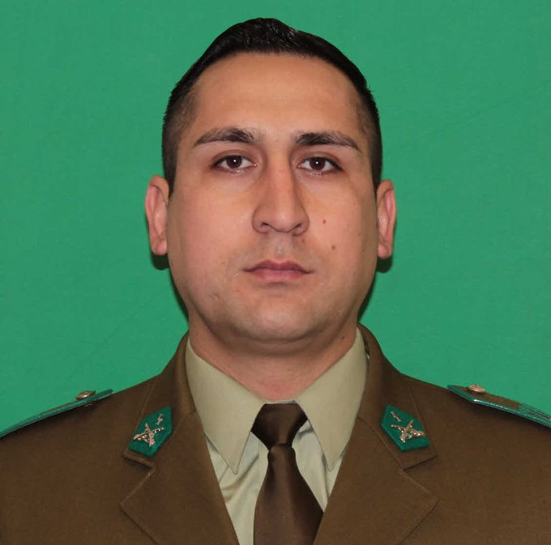

Autor: Alverto Enriquez
Finalmente, el carabinero Daniel Palma, de 33 años, murió en la ex Posta Central, tras ser baleado en la cabeza en un control policial. El fallecimiento del uniformado fue comunicado por el director del establecimiento, Patricio Barría, cerca de las 2:00 de la madrugada de este jueves 6 de abril. En un breve contacto con la prensa, Barría indicó que el cabo primero Palma “fallece en la UCI, acompañado de sus familiares”, agregando que “expresamos las condolencias a la institución, a la familia que se encuentra con ellos, y al país”. Qué le pasó El efectivo de Carabineros recibió dos disparos en el centro de Santiago, en la Región Metropolitana. Según información preliminar, el incidente ocurrió a las 21:00 horas en la intersección de calle Arturo Prat con Avenida Matta, cuando Palma concurrió a un procedimiento cerca del Teatro Caupolicán, a raíz de una denuncia por la realización de disparos en las cercanía del lugar. Al controlar un automóvil Audi gris, de manera sorpresiva los ocupantes le dispararon dos veces en la cara, sufriendo uno de los impactos en el cráneo. El policía fue trasladado de urgencia en una ambulancia del SAMU a la ex Posta Central, donde falleció horas más tarde. Reacciones Cristian Matus, director de sanidad de Carabineros, fue uno de los primeros en reaccionar al fallecimiento del uniformado: “Se han hecho todos los esfuerzos humanamente posibles para ayudar a Daniel, pero las lesiones fueron terriblemente dañinas (...) Pese a que se hicieron grandes esfuerzos, lamentamos su partida. Una madre ha perdido a su hijo, un hijo ha perdido a su padre, una mujer a su marido, Chile ha perdido a un carabinero”. Mauricio Palma, hermano del policía asesinado, lamentó que “me quitaron a mi hermano, me lo arrebataron (...) Hace poco había hablado con él, le pedí que se cuidara (...) Siempre tuvo vocación por su trabajo, amaba ser carabinero, y me imagino que le hubiera gustado que lo respaldaran”..